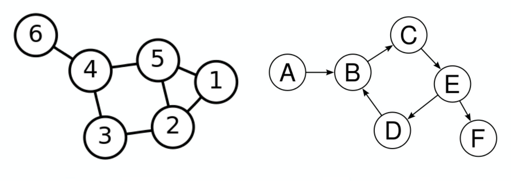
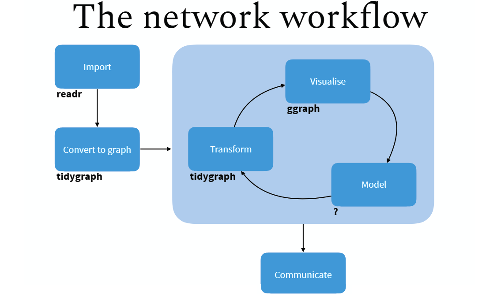
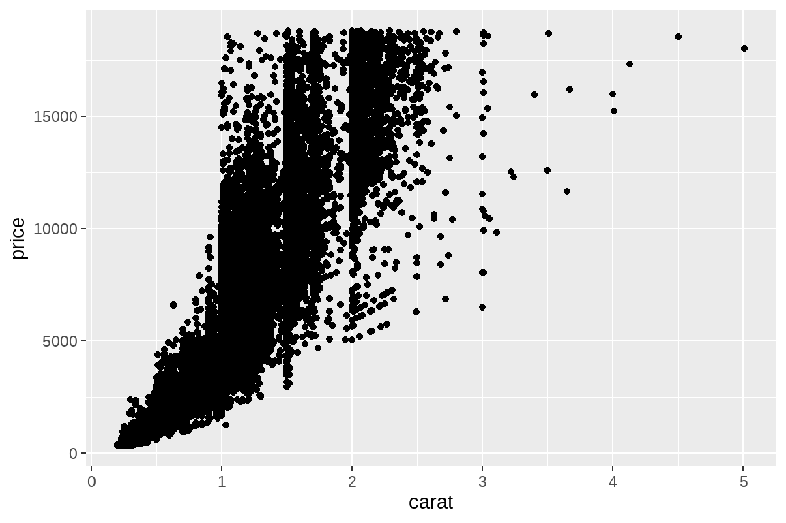
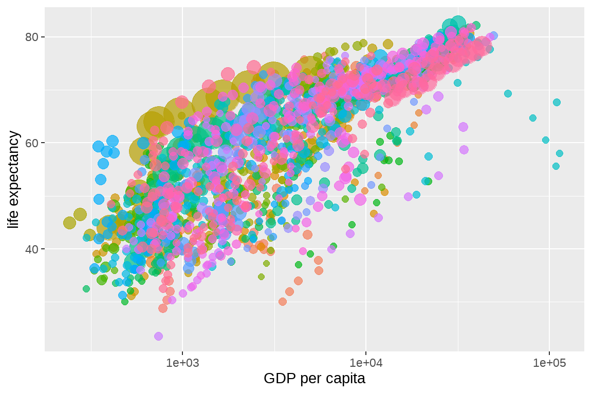
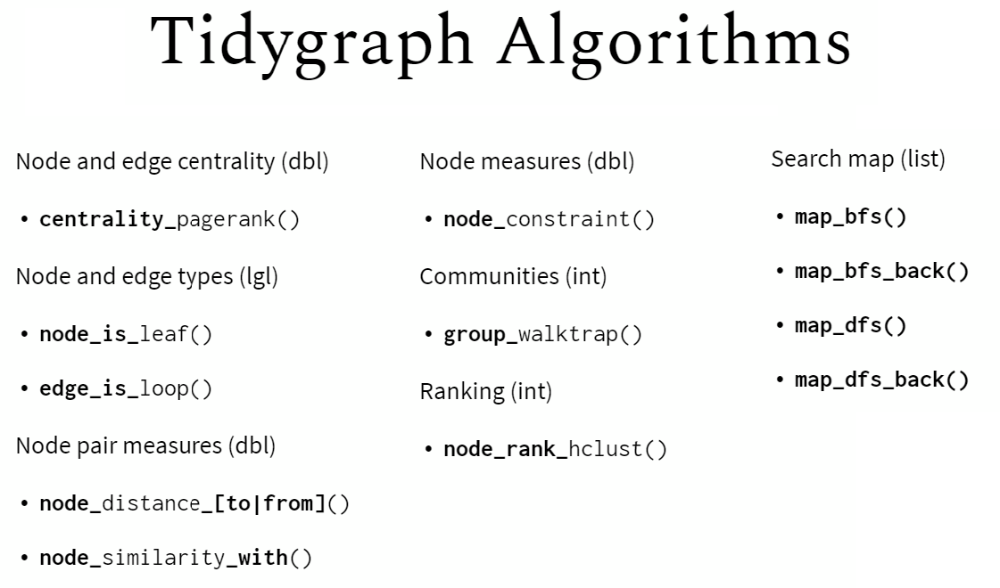
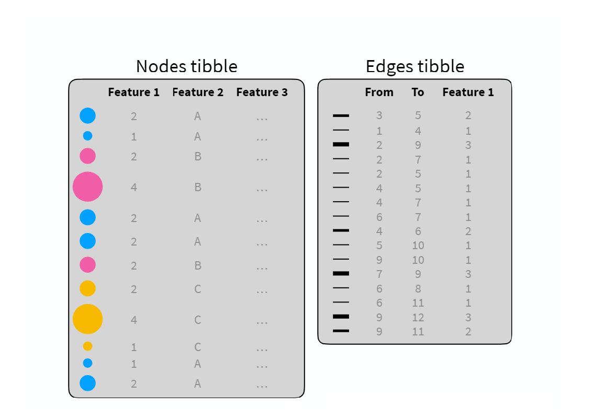

第 25 章 社会网络分析
本章通过tidygraph宏包介绍社会网络分析。社会网络分析涉及的知识比较多，而tidygraph将网络结构规整地比较清晰，降低了学习难度，很适合入门学习。
25.1 图论基本知识
网络图有两个主要特征: nodes and edges，
nodes:
edges:

当然还包括其它的概念，比如
adjacency matrix:
edge list:
Node list:
Weighted network graph:
Directed and undirected network graph:
有向图

无向图 
25.2 网络分析
先介绍tidygraph宏包
25.2.1 tidygraph: A tidy API for graph manipulation

25.2.2 Tidy Network Anaylsis
- 在
tidygraph框架, 网络数据可以分解成两个tidy数据框:- 一个是 node data
- 一个是 edge data
tidygraph宏包提供了node数据框和edge数据框相互切换的方案，并且可以使用dplyr的语法操控tidygraph提供了常用的网络结构的algorithms，比如，计算网络拓扑结构中节点的重要性、中心度等。
25.2.3 Create network objects
创建网络对象主要有两个函数:
tbl_graph(). Creates a network object from nodes and edges dataas_tbl_graph(). Converts network data and objects to atbl_graphnetwork.
案例: 欧盟总统之间通话以及次数。
25.2.4 Use tbl_graph
- Create a
tbl_graphnetwork object using the phone call data:
- Visualize the network graph
ggraph(phone.net, layout = "graphopt") +
geom_edge_link(width = 1, colour = "lightgray") +
geom_node_point(size = 4, colour = "red") +
geom_node_text(aes(label = label), repel = TRUE) +
theme_graph()
25.2.5 Use as_tbl_graph
mtcars data set: R 的内置数据集，记录了32种不同品牌的轿车的的11个属性
1、we create a correlation matrix network graph
library(corrr)
res.cor <- mtcars[, c(1, 3:6)] %>% # (1)
t() %>%
correlate() %>% # (2)
shave(upper = TRUE) %>% # (3)
stretch(na.rm = TRUE) %>% # (4)
filter(r >= 0.998) # (5)
res.cor2、Create the correlation network graph:
ggraph(cor.graph) +
geom_edge_link() +
geom_node_point() +
geom_node_text(
aes(label = name),
size = 3, repel = TRUE
) +
theme_graph()
25.2.6 Print out a network object
## # A tbl_graph: 24 nodes and 59 edges
## #
## # An undirected simple graph with 3 components
## #
## # Node Data: 24 x 1 (active)
## name
## <chr>
## 1 Mazda RX4
## 2 Mazda RX4 Wag
## 3 Datsun 710
## 4 Hornet 4 Drive
## 5 Hornet Sportabout
## 6 Valiant
## # ... with 18 more rows
## #
## # Edge Data: 59 x 3
## from to r
## <int> <int> <dbl>
## 1 1 2 1.00
## 2 1 20 1.00
## 3 1 8 0.999
## # ... with 56 more rows25.2.7 extract the current active data
## # A tbl_graph: 24 nodes and 59 edges
## #
## # An undirected simple graph with 3 components
## #
## # Edge Data: 59 x 3 (active)
## from to r
## <int> <int> <dbl>
## 1 1 2 1.00
## 2 10 11 1.00
## 3 10 12 1.00
## 4 11 12 1.00
## 5 8 9 1.00
## 6 5 18 1.00
## # ... with 53 more rows
## #
## # Node Data: 24 x 1
## name
## <chr>
## 1 Mazda RX4
## 2 Mazda RX4 Wag
## 3 Datsun 710
## # ... with 21 more rowsNote that, to extract the current active data as a tibble, you can use the function as_tibble(cor.graph).
25.3 Network graph manipulation
25.3.1 Car groups info (Number of cylinders)
# Car groups info
cars.group <- data_frame(
name = rownames(mtcars),
cyl = as.factor(mtcars$cyl)
)
cars.group25.3.2 Modify the nodes data:
# Modify the nodes data
cor.graph <- cor.graph %>%
activate(nodes) %>%
left_join(cars.group, by = "name") %>%
rename(label = name)
cor.graph## # A tbl_graph: 24 nodes and 59 edges
## #
## # An undirected simple graph with 3 components
## #
## # Node Data: 24 x 2 (active)
## label cyl
## <chr> <fct>
## 1 Mazda RX4 6
## 2 Mazda RX4 Wag 6
## 3 Datsun 710 4
## 4 Hornet 4 Drive 6
## 5 Hornet Sportabout 8
## 6 Valiant 6
## # ... with 18 more rows
## #
## # Edge Data: 59 x 3
## from to r
## <int> <int> <dbl>
## 1 1 2 1.00
## 2 1 20 1.00
## 3 1 8 0.999
## # ... with 56 more rows25.3.3 Modify the edge data.
## # A tbl_graph: 24 nodes and 59 edges
## #
## # An undirected simple graph with 3 components
## #
## # Edge Data: 59 x 3 (active)
## from to weight
## <int> <int> <dbl>
## 1 1 2 1.00
## 2 1 20 1.00
## 3 1 8 0.999
## 4 1 9 0.999
## 5 1 11 0.998
## 6 2 20 1.00
## # ... with 53 more rows
## #
## # Node Data: 24 x 2
## label cyl
## <chr> <fct>
## 1 Mazda RX4 6
## 2 Mazda RX4 Wag 6
## 3 Datsun 710 4
## # ... with 21 more rows25.3.4 Display the final modified graphs object:
## # A tbl_graph: 24 nodes and 59 edges
## #
## # An undirected simple graph with 3 components
## #
## # Edge Data: 59 x 3 (active)
## from to weight
## <int> <int> <dbl>
## 1 1 2 1.00
## 2 1 20 1.00
## 3 1 8 0.999
## 4 1 9 0.999
## 5 1 11 0.998
## 6 2 20 1.00
## # ... with 53 more rows
## #
## # Node Data: 24 x 2
## label cyl
## <chr> <fct>
## 1 Mazda RX4 6
## 2 Mazda RX4 Wag 6
## 3 Datsun 710 4
## # ... with 21 more rows
25.4 Network analysis
25.4.1 Centrality
Centrality is an important concept when analyzing network graph.
The tidygraph package contains more than 10 centrality measures, prefixed with the term centrality_ :
# centrality_alpha()
# centrality_power()
# centrality_authority()
# centrality_betweenness()
# centrality_closeness()
# centrality_hub()
# centrality_degree()
# centrality_pagerank()
# centrality_eigen()
# centrality_subgraph
# centrality_edge_betweenness()example: - use the phone call network graph ( 欧盟总统之间通话以及次数) - compute nodes centrality
## # A tbl_graph: 16 nodes and 18 edges
## #
## # A directed acyclic simple graph with 1 component
## #
## # Node Data: 16 x 3 (active)
## id label centrality
## <int> <chr> <dbl>
## 1 1 France 1.01e- 1
## 2 2 Belgium 6.43e-17
## 3 3 Germany 1.00e+ 0
## 4 4 Danemark 3.21e-17
## 5 5 Croatia 3.21e-17
## 6 6 Slovenia 3.21e-17
## # ... with 10 more rows
## #
## # Edge Data: 18 x 3
## from to weight
## <int> <int> <dbl>
## 1 1 3 9
## 2 2 1 4
## 3 1 8 3
## # ... with 15 more rowsset.seed(123)
phone.net %>%
activate(nodes) %>%
mutate(centrality = centrality_authority()) %>%
ggraph(layout = "graphopt") +
geom_edge_link(width = 1, colour = "lightgray") +
geom_node_point(aes(size = centrality, colour = centrality)) +
geom_node_text(aes(label = label), repel = TRUE) +
scale_color_gradient(low = "yellow", high = "red") +
theme_graph()
25.4.2 Clustering
Clustering is a common operation in network analysis and it consists of grouping nodes based on the graph topology.
Many clustering algorithms from are available in the tidygraph package and prefixed with the term group_. These include:
- Infomap community finding. It groups nodes by minimizing the expected description length of a random walker trajectory. R function:
group_infomap() - Community structure detection based on edge betweenness. It groups densely connected nodes. R function:
group_edge_betweenness()
- Infomap community finding. It groups nodes by minimizing the expected description length of a random walker trajectory. R function:
example: - use the correlation network graphs (记录了32种不同品牌的轿车的的11个属性) - detect clusters or communities
set.seed(123)
cluster_mtcars <- cor.graph %>%
activate(nodes) %>%
mutate(community = as.factor(group_infomap()))
cluster_mtcars## # A tbl_graph: 24 nodes and 59 edges
## #
## # An undirected simple graph with 3 components
## #
## # Node Data: 24 x 3 (active)
## label cyl community
## <chr> <fct> <fct>
## 1 Mazda RX4 6 1
## 2 Mazda RX4 Wag 6 1
## 3 Datsun 710 4 3
## 4 Hornet 4 Drive 6 2
## 5 Hornet Sportabout 8 2
## 6 Valiant 6 2
## # ... with 18 more rows
## #
## # Edge Data: 59 x 3
## from to weight
## <int> <int> <dbl>
## 1 1 2 1.00
## 2 1 20 1.00
## 3 1 8 0.999
## # ... with 56 more rowscluster_mtcars %>%
ggraph(layout = "graphopt") +
geom_edge_link(width = 1, colour = "lightgray") +
geom_node_point(aes(colour = community), size = 4) +
geom_node_text(aes(label = label), repel = TRUE) +
theme_graph()
25.4.3 More Algorithms

25.5 小结

tidybayes很聪明地将复杂的网络结构用两个数据框表征出来，node 数据框负责节点的属性，edge 数据框负责网络连接的属性，调整其中的一个数据框，另一个也会相应的调整，比如node数据框中删除一个节点，edge数据框就会自动地删除该节点的所有连接。

25.6 Network Visualization
这里主要介绍tidygraph配套的ggraph宏包，它们的作者都是同一个人。
25.6.1 ggraph: A grammar of graphics for relational data
ggraph 沿袭了ggplot2的语法规则，
cluster_mtcars %>%
# Layout
ggraph(layout = "graphopt") +
# Edges
geom_edge_link(
width = 1,
colour = "lightgray"
) +
# Nodes
geom_node_point(
aes(colour = community),
size = 4
) +
geom_node_text(
aes(label = label),
repel = TRUE
) +
theme_graph()